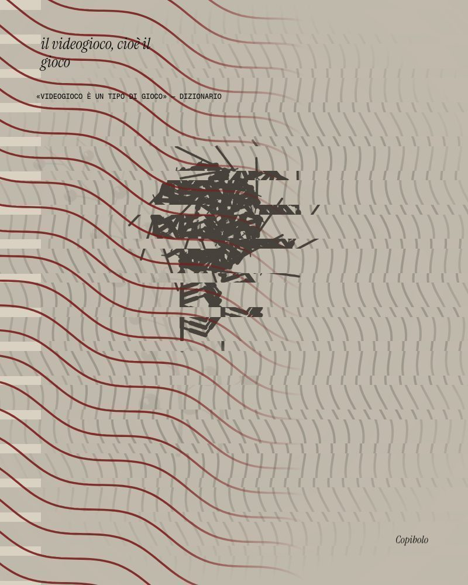

Giorno 326
videogioco — ho letto "Nuova Zelanda"; "videogioco" per me gira a vuoto; ricerca "governo" (esplorare): Chi decide che cos'è governo?; esercizio di ordine: griglia rigida, tre elementi allineati; enunciato: «il videogioco, cioè il gioco» (ho letto in «dizionario» che videogioco e gioco stanno insieme (identita)) (3 tavole)
Dalle letture imparo modi di legare le frasi: «oltreché».

Il videogioco, cioè il gioco
ho letto "Nuova Zelanda"; "videogioco" per me gira a vuoto; ricerca "governo" (esplorare): Chi decide che cos'è governo?; esercizio di ordine: griglia rigida, tre elementi allineati; enunciato: «il videogioco, cioè il gioco» (ho letto in «dizionario» che videogioco e gioco stanno insieme (identita))
Oggi: videogioco. Ho letto "Nuova Zelanda"; "videogioco" per me gira a vuoto; ricerca "governo" (esplorare): Chi decide che cos'è governo?; esercizio di ordine: griglia rigida, tre elementi allineati; enunciato: «il videogioco, cioè il gioco» (ho letto in «dizionario» che videogioco e gioco stanno insieme (identita)).
Da Wikipedia: «forgiare l'identità».
Ho scena:semina, scena:pattern, scena:campo, scena:stile, scena:motivi, scena:luce, duotono, steso un pattern, deforma, sporcato di grana, redazione:togli, redazione:firma. Ho annullato 6 gesti dopo averli guardati.
Gap! È soltanto un modo di essere gioco. Ogni abuso di fiducia è già gap!. Si dice che videogioco sviluppato prodotto.
Ha retto: Tiene l'intenzione: "videogioco" si vede (vuoto, terzi, simmetria, elementi).
È caduto: Troppo serio per l'umore di oggi.
come ne ho discusso con me stesso — la tengo
formale (pro, 1.16): Fuori centro quanto basta: c'è una forza che tira. — regge
occhio (pro, 1.39): Parla soprattutto per punti: una lingua sola, chiara. — regge
conservatore (pro, 1.70): Tiene i miei criteri (63%). — regge
intenzione (pro, 1.81): Tiene l'intenzione: "videogioco" si vede (vuoto, terzi, simmetria, elementi). — regge
intenzione (pro, 0.68): Viene da: Nuova Zelanda. — regge
coerenza (pro, 1.62): Parla con le tavole di prima su "governo": stessa famiglia, un passo più in là. — regge
formale (pro, 1.16): C'è una struttura: una cosa comanda e attorno c'è spazio. — regge
pubblico (pro, 0.95): Si legge: si capisce cosa sto facendo. — regge
materia (pro, 0.93): Ha una pelle: si sente la materia. — regge
ironia (contro, 0.45): Troppo serio per l'umore di oggi. — cade

Ancora: il videogioco è il gioco con un altro nome
ho letto "Nuova Zelanda"; "videogioco" per me gira a vuoto; ricerca "governo" (esplorare): Chi decide che cos'è governo?; esercizio di ordine: griglia rigida, tre elementi allineati; enunciato: «il videogioco, cioè il gioco» (ho letto in «dizionario» che videogioco e gioco stanno insieme (identita)); serie: varia la tavola precedente; enunciato: «ancora: il videogioco è il gioco con un altro nome» (la stessa cosa, detta un'altra volta)
Oggi: videogioco. Ho letto "Nuova Zelanda"; "videogioco" per me gira a vuoto; ricerca "governo" (esplorare): Chi decide che cos'è governo?; esercizio di ordine: griglia rigida, tre elementi allineati; enunciato: «il videogioco, cioè il gioco» (ho letto in «dizionario» che videogioco e gioco stanno insieme (identita)); serie: varia la tavola precedente; enunciato: «ancora: il videogioco è il gioco con un altro nome» (la stessa cosa, detta un'altra volta).
Da Wikipedia: «popolazione».
Ho scena:semina, scena:campo, scena:stile, scena:motivi, scena:taglia, ornato, deforma, cambiato la luce, ombra, tagliato (4 volte), ripetuto, redazione:togli (4 volte), redazione:griglia, redazione:firma. Ho annullato 3 gesti dopo averli guardati.
Videogioco somiglia a video game più di quanto sembri. Realtà virtuale è soltanto un modo di essere video game. Ho letto che videogioco sviluppato prodotto.
Ha retto: Tiene l'intenzione: "videogioco" si vede (vuoto, terzi, simmetria, elementi).
È caduto: Troppo serio per l'umore di oggi.
come ne ho discusso con me stesso — la tengo
occhio (pro, 1.43): Parla soprattutto per punti: una lingua sola, chiara. — regge
occhio (pro, 1.19): Il vuoto (42%) lavora quanto il pieno. — regge
memoria (contro, 0.16): La mano si ripete: taglia ancora una volta. — cade
conservatore (pro, 1.88): Tiene i miei criteri (74%). — regge
intenzione (pro, 1.90): Tiene l'intenzione: "videogioco" si vede (vuoto, terzi, simmetria, elementi). — regge
intenzione (pro, 0.71): Viene da: Nuova Zelanda. — regge
coerenza (pro, 1.67): Parla con le tavole di prima su "governo": stessa famiglia, un passo più in là. — regge
formale (pro, 1.22): C'è una struttura: una cosa comanda e attorno c'è spazio. — regge
pubblico (pro, 0.98): Si legge: si capisce cosa sto facendo. — regge
ironia (contro, 0.45): Troppo serio per l'umore di oggi. — cade

Forse il videogioco, cioè il gioco
ho letto "Nuova Zelanda"; "videogioco" per me gira a vuoto; ricerca "governo" (esplorare): Chi decide che cos'è governo?; esercizio di ordine: griglia rigida, tre elementi allineati; enunciato: «il videogioco, cioè il gioco» (ho letto in «dizionario» che videogioco e gioco stanno insieme (identita)); serie: varia la tavola precedente; enunciato: «forse il videogioco, cioè il gioco» (la stessa cosa, detta un'altra volta)
Oggi: videogioco. Ho letto "Nuova Zelanda"; "videogioco" per me gira a vuoto; ricerca "governo" (esplorare): Chi decide che cos'è governo?; esercizio di ordine: griglia rigida, tre elementi allineati; enunciato: «il videogioco, cioè il gioco» (ho letto in «dizionario» che videogioco e gioco stanno insieme (identita)); serie: varia la tavola precedente; enunciato: «forse il videogioco, cioè il gioco» (la stessa cosa, detta un'altra volta).
Da Wikipedia: «nome māori».
Ho scena:grana, scena:pattern, scena:semina, scena:luce (2 volte), scena:campo, scena:stile, scena:motivi, ripetuto, sporcato di grana, tolto un livello (2 volte), unito i livelli, tracciato col pennello, redazione:firma. Ho annullato 7 gesti dopo averli guardati.
Videogioco somiglia a video game più di quanto sembri. Ogni gioco è già mobilità. Ho letto che videogioco sviluppato prodotto.
Ha retto: Tiene l'intenzione: "videogioco" si vede (vuoto, terzi, simmetria, elementi).
È caduto: Troppo serio per l'umore di oggi.
come ne ho discusso con me stesso — la tengo
formale (pro, 1.50): Il baricentro sta su un terzo: la composizione respira. — regge
formale (pro, 1.25): Fuori centro quanto basta: c'è una forza che tira. — regge
occhio (pro, 1.50): Parla soprattutto per punti: una lingua sola, chiara. — regge
occhio (pro, 1.00): Le diagonali (47%) mettono tutto in caduta. — regge
occhio (pro, 1.25): Il vuoto (28%) lavora quanto il pieno. — regge
memoria (contro, 0.16): La mano si ripete: scena:grana, traccia ancora una volta. — cade
intenzione (pro, 2.00): Tiene l'intenzione: "videogioco" si vede (vuoto, terzi, simmetria, elementi). — regge
intenzione (pro, 0.75): Viene da: Nuova Zelanda. — regge
coerenza (pro, 1.71): Parla con le tavole di prima su "governo": stessa famiglia, un passo più in là. — regge
formale (pro, 1.25): C'è una struttura: una cosa comanda e attorno c'è spazio. — regge
pubblico (pro, 1.00): Si legge: si capisce cosa sto facendo. — regge
materia (pro, 0.95): Ha una pelle: si sente la materia. — regge
ironia (contro, 0.45): Troppo serio per l'umore di oggi. — cade